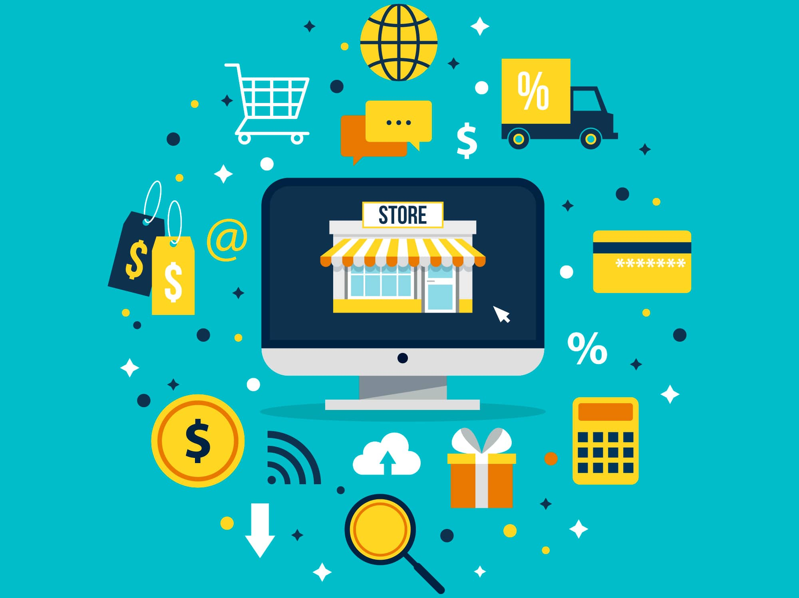

PRINCIPAL
B2B
B2C
B2E
C2C
B2G
C2G
ECOMMERCE DE PRODUCTOS DIGITALES
ECOMMERCE DE INFOPRODUCTOS
ECOMMERCE SOFTWARE AS A SERVICE (SAAS)
ECOMMERCE OPEN SOURCE
ECOMMERCE DE SERVICIOS
ECOMMERCE DE SERVICIOS
El concepto de comercio electrónico abarca un campo
mucho más amplio que la simple apertura de una tienda
online en Internet.Desarrollamos plataformas de
comercio electrónico acompañadas de servicios de
dinamización y comercialización que responden a las
necesidades de cada uno de nuestros clientes.
Un sistema de compra y venta de productos y servicios
que utiliza Internet como medio principal de
intercambio. En otras palabras, se trata de un comercio
que gestiona los cobros y pagos a través de medios
electrónicos.
Constituye un nuevo soporte para la actividad comercial
porque carece de materialidad y de pautas físicas
(espacio y tiempo) pero le da accesibilidad y rapidez.
De tal modo que se pueden realizar transacciones
todos los días del año a cualquier hora y en cualquier
lugar del mundo.
